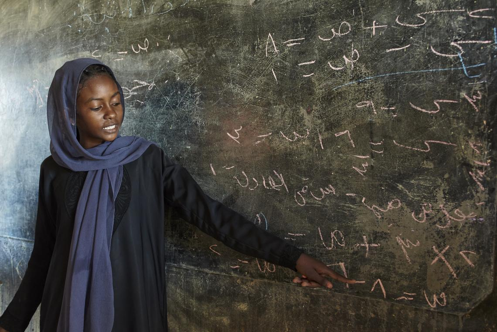
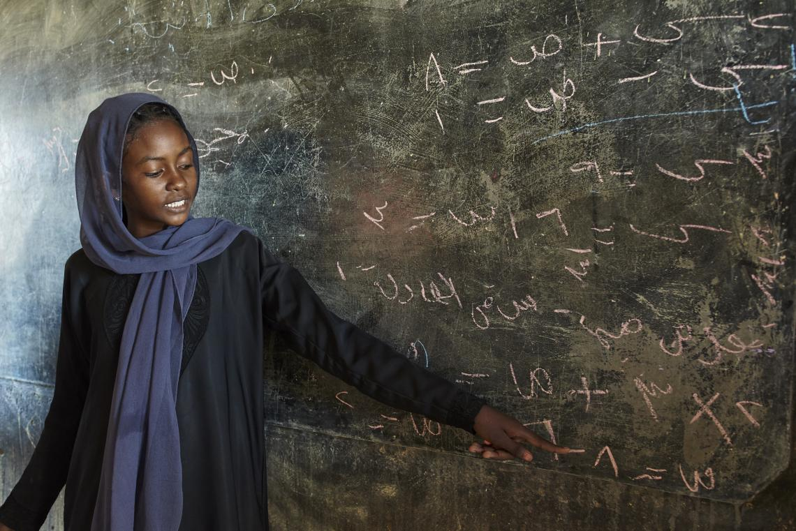
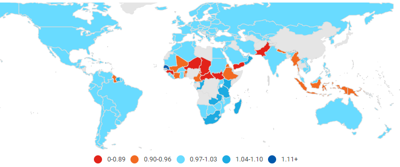

The number of primary school-aged girls that are not enrolled in school has decreased significantly, yet there are still 5.5 million more girls out of school globally than boys. Girls of primary school age who are not enrolled in school globally fell by 44%, from 57 million to 32 million, between 2000 and 2018. Despite this development, 59 million primary school-aged children (55 percent of whom were girls) did not attend school in 2018, with sub-Saharan Africa having the highest rates globally. For more info visit unicef.org/gender-disparities-in-education/
